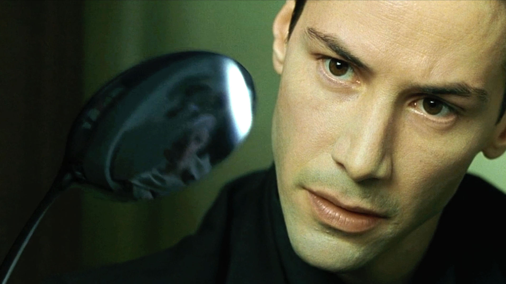
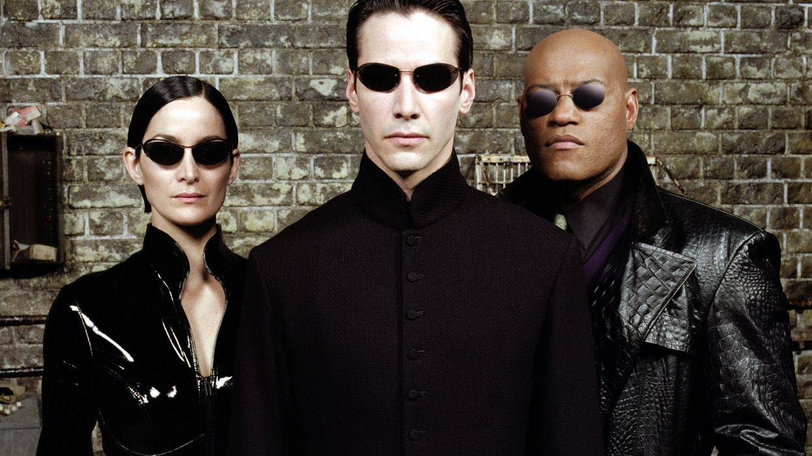
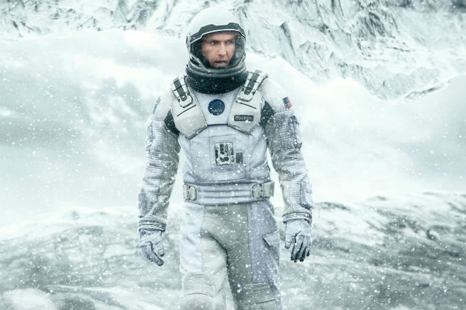
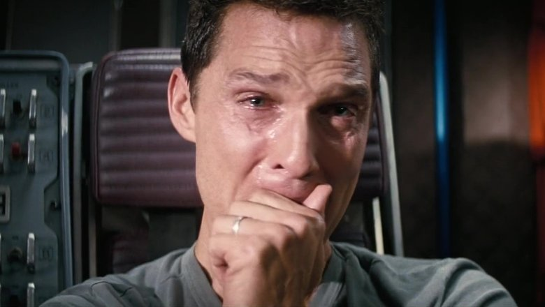
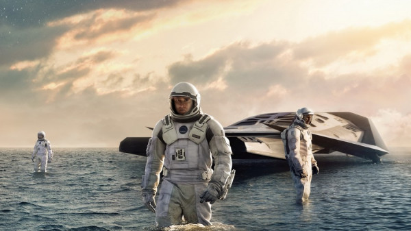

Мои любимые фильмы
Выберите фильм для перехода:
Матрица (The Matrix)
Краткое содержание
Жизнь Томаса Андерсона разделена на две части: днём он самый обычный офисный работник, а ночью — хакер по имени Нео. Однажды он узнает страшную правду: всё, что его окружает, — это иллюзия, Матрица, а люди — всего лишь источник питания для искусственного интеллекта.
Информация о фильме
| Год | Страна | Жанр | Режиссёр |
|---|---|---|---|
| 1999 | США, Австралия | Фантастика, боевик | Братья Вачовски |



Интерстеллар (Interstellar)
Краткое содержание
Наше время на Земле подошло к концу, команда исследователей берет на себя самую важную миссию в истории человечества: путешествуя за пределами нашей галактики через недавно обнаруженную червоточину, они должны узнать, есть ли у человечества будущее среди звезд.
Информация о фильме
| Год | Страна | Жанр | Режиссёр |
|---|---|---|---|
| 2014 | США, Великобритания | Научная фантастика, драма | Кристофер Нолан |



Властелин колец: Братство Кольца
Краткое содержание
Сказания о Средиземье — это хроника Великой войны за Кольцо. Тихий хоббит Фродо Бэггинс получает в наследство Кольцо Всевластья. Ему предстоит отправиться в опасное путешествие к горе Ородруин, чтобы уничтожить артефакт и спасти мир от Темного Властелина Саурона.
Информация о фильме
| Год | Страна | Жанр | Режиссёр |
|---|---|---|---|
| 2001 | Новая Зеландия, США | Фэнтези, приключения | Питер Джексон |